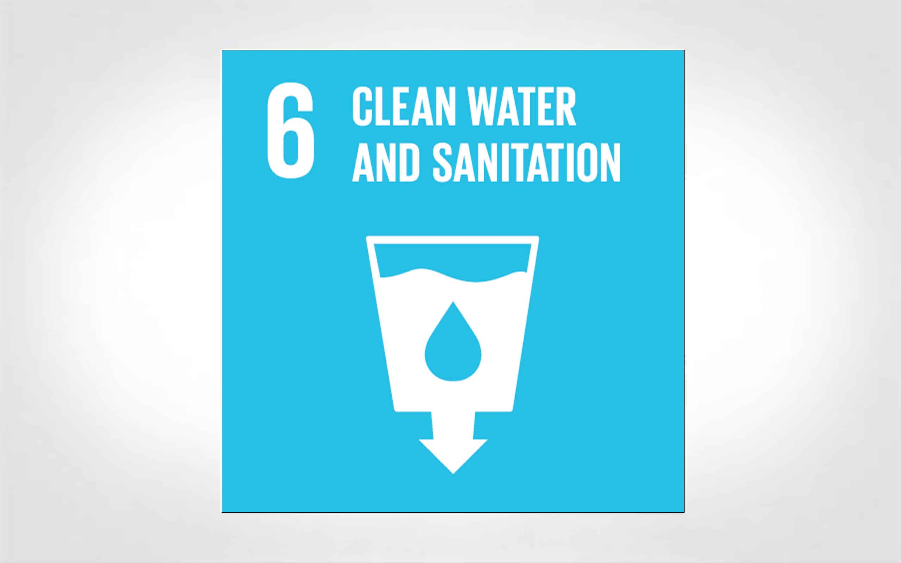
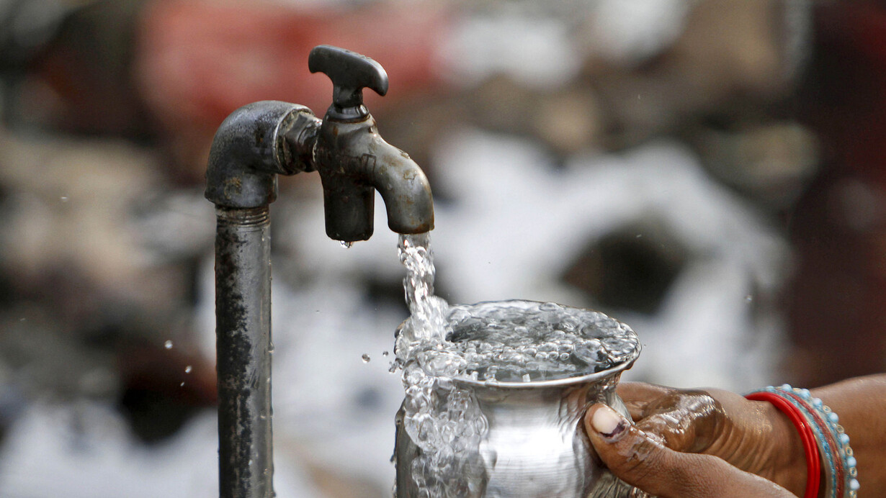

Content Page
Clean water and sanitation
Why do we need Clean water and Sanitation?
Water is one of the most important things a human needs as it is part of our survival, without water we would get diseased and die of
possible dehydration. Having access to clean water and sanitation are essential for maintaining public health, preventing diseases,
and promoting overall well-being. Having access to clean water can prevent all sorts of diseases especially in vulnerable
communities, saving lives and providing hydration and sanitation to people's lives

Why is access to clean water and sanitation important for public health?
Having access to clean water and sanitation are essential for maintaining public health,
preventing diseases, and promoting overall well-being.
Having access to clean water can prevent all sorts of diseases especially in vulnerable communities, saving lives and
providing hydration and sanitation to people's lives
